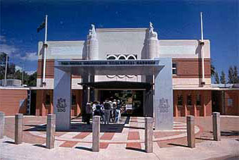

Crown Melbourne

Melbourne Zoo

The Melbourne Cricket Ground (MCG) is an Australian sports stadium, the sports stadium is located in Yarra Park of Melbourne City. It is known for its rich history of sporting events. The stadium has a capacity of over 100,000 people and is the largest stadium in Australia, it is the largest stadium in the Southern Hemisphere, the 11th largest globally, and the second-largest cricket ground by capacity, after the Narendra Modi Stadium. In its early history, the MCG was built atop a Wurundjeri camping ground, this was during 1853. The first game on MCG was against a military team at the Old Mint site, at the corner of William and La Trobe Streets.

Melbourne Zoo is a zoo in Melbourne. It is home to the wonders of the natural world, showcasing a captivating array of wildlife from diverse ecosystems across the globe. With its lush landscapes and meticulously designed habitats, the zoo provides a safe haven for a wide variety of animal species, including endangered and rare ones. The Zoological Society of Victoria formed in October 1857 to bring in foreign animals and plants. Initially, the animals were kept in Richmond Paddock. By 1861, the organization rebranded as the "Acclimatisation Society of Victoria." Today, Melbourne Zoo stands as a beacon of conservation, dedicated to preserving biodiversity and advocating for the welfare of all creatures, great and small.
Lunapark is one of Melbourne's most historic amusement park, it is located in Phillip Bay, St Kilda, Melbourne. Luna Park, an integral part of Melbourne's cultural fabric, has delighted generations of visitors with its nostalgic charm and thrilling rides. Its enduring popularity is a testament to its timeless appeal and vibrant atmosphere. The park's name is known due to its rich historic presence as Luna Park was built by American showman J.D. Williams,together with the Phillips brothers Harold, Leon and Herman. The park in Melbourne was opened in 1912 13 December and is still operating to this day, with many interesting rides and a reasonable price.

Crown Melbourne is in the heart of Melbourne, the Yarra River in Melbourne. Overlooking the river, you will be able to hop into the Casino to try out your luck. If you are not into casino's the crown also provides restaurants and hotel for luxury or you can experience a diverse range of activities and entertainment at the Metropol Precinct, ideal for a family day out or a night with friends. Delight in the allure of the infinity pool, explore versatile event venues, or indulge in shopping and entertainment options. The crown was founded, owned and run by Lloyd Williams until taken over by Publishing & Broadcasting Limited in 1999.